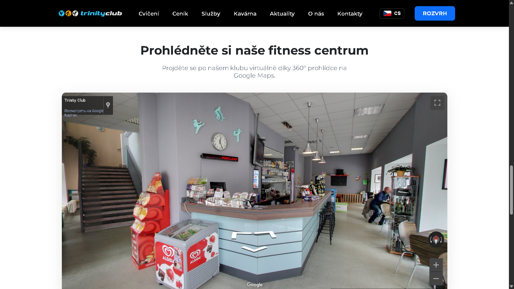

Trinity Club Cheb
Od chaosu k jasnému a přehlednému rozvrhu hodin.
Výzva: Ztracení klienti a zastaralý design
Původní webové stránky Trinity Clubu přestaly odpovídat požadavkům doby. Byly nepřehledné, neoptimalizované pro mobilní telefony a vizuálně zastaralé. Pro klienty bylo velmi obtížné najít aktuální rozvrh, což vedlo k neustálým dotazům a frustraci. Cílem bylo vytvořit web, který bude moderní, rychlý a kde bude rozvrh hodin tím hlavním a snadno dostupným prvkem.
Naše Řešení: Rychlost, vícejazyčnost a fokus na UX
Přistoupili jsme k úkolu komplexně a rozhodli se vytvořit web od základu na čistém a rychlém kódu (HTML, CSS, JavaScript). Tento přístup zaručil maximální rychlost načítání a bezpečnost, což je klíčové pro udržení pozornosti uživatelů.
Vícejazyčná podpora
S ohledem na turistický charakter Chebu jsme implementovali plnohodnotný překladový systém do 4 jazyků (CZ, EN, DE, RU), což umožňuje klubu efektivně oslovit i zahraniční klientelu.
Interaktivita a dynamika
Oživili jsme stránky pomocí interaktivních prvků, jako je efektní slider na úvodní stránce a karusel s týmem trenérů, s využitím knihovny Swiper.js.
Mobile-First Design
Veškeré prvky, od navigace po rozvrh, byly navrženy s prioritou pro pohodlné zobrazení a ovládání na mobilních telefonech.
Původní web
Náš Redesign
Výsledek: Spokojení klienti a úspora času
Nový web přinesl okamžité a hmatatelné výsledky. Výrazně klesl počet telefonických dotazů ohledně rozvrhu, což ušetřilo čas personálu. Klienti si nyní mohou snadno plánovat tréninky přímo z telefonu a profesionální vzhled webu posílil důvěru ve značku a pomohl přilákat nové členy.